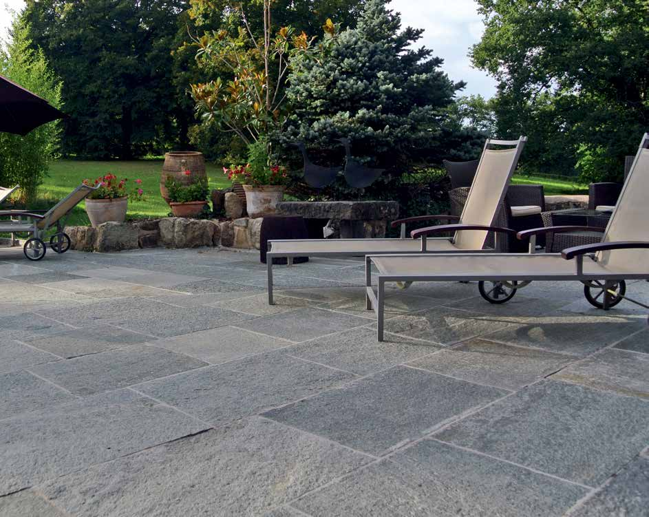

Particuliers
Préparez une rénovation ou une construction : photos, dimensions, références et échantillons pour échanger avec un revendeur.

Corse
En Corse, la préparation des références, du conditionnement et de l’acheminement fait partie du choix du carrelage. Organisez votre sélection en amont avec les catalogues, les visuels et les outils 3D de LE ROY FACTORY.

Préparez un métré pièce par pièce et séparez les références courantes des marches, plinthes, margelles ou pièces décoratives. Une finition oubliée peut nécessiter un complément distinct. Le conditionnement, la disponibilité, le transport vers la Corse et le déchargement sont à confirmer dans l’offre commerciale.
Le calepinage aide à identifier les coupes et la réserve à faire valider. Les quantités d’un configurateur constituent une préparation : le professionnel confirme les cartons, palettes et conditions réelles avant la commande.
Les photographies et rendus 3D facilitent un premier choix quand les interlocuteurs sont éloignés. Demandez une sélection courte avec les noms de collection, les coloris et les références exactes. Pour une couleur déterminante, prévoyez un échantillon à examiner dans la lumière du projet.
Les outils de salle de bains permettent de discuter d’une implantation, d’une vasque et d’un miroir. Pour la terrasse ou la piscine, distinguez bien l’image d’ambiance de la fiche technique propre à chaque produit.
Précisez si le chantier se situe près d’Ajaccio, de Bastia, de Porto-Vecchio, de Calvi ou ailleurs sur l’île. Ajoutez l’adresse de livraison envisagée et les contraintes d’accès au dossier. L’agence vérifie les possibilités de fourniture avec le fabricant et les professionnels concernés.
Les délais et frais pour la Corse font l’objet d’une confirmation spécifique. Les conditions de livraison affichées pour d’autres secteurs ne doivent pas être considérées comme automatiquement applicables à l’île.
Préparez une rénovation ou une construction : photos, dimensions, références et échantillons pour échanger avec un revendeur.
Négoces, showrooms et artisans : présentez les collections, préparez une sélection et retrouvez les accès professionnels.
Travaillez les associations de matières, préparez les détails d’un projet et transmettez une sélection lisible au professionnel chargé de la fourniture.
Comparez les matières dans une pièce, composez le mobilier de salle de bains ou préparez les quantités. Les outils disponibles sont présentés avant leur ouverture ; les espaces professionnels conservent leurs accès habituels.

Mobilier, vasques, miroirs et revêtements : préparez une composition et échangez sur des choix précis.

Découvrez les outils de visualisation, de calepinage et de calcul des joints, plots et croisillons.
Votre commune, le type de projet, un plan coté et quelques photos ; puis une liste de surfaces par zone, vos préférences de matière et les références déjà repérées.
Précisez si vous êtes un particulier, un négoce, un artisan, un architecte ou un décorateur. Le fabricant concerné et les interlocuteurs de la fourniture permettent à l’équipe de donner une réponse adaptée.
Une sélection à concrétiser
Indiquez votre commune, votre activité, les surfaces concernées et les références qui vous intéressent. LE ROY FACTORY est une agence commerciale : l’équipe vous conseille et précise le circuit de fourniture ou le revendeur adapté au projet.